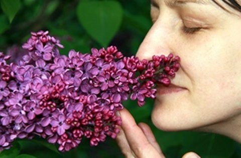
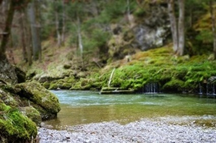

Metsäkylpy – lempeä tie palautumiseen ja hyvinvointiin
Metsäkylpy on rauhallinen, ohjattu luontohetki, jossa kiire ja suorittaminen saavat väistyä. Sen juuret ulottuvat japanilaiseen shinrin-yoku-menetelmään, jonka ydin on yksinkertainen: pysähdy, hengitä ja anna luonnon vaikuttaa. Metsäkylvyssä ei kuljeta tavoitteellisesti, vaan edetään hitaasti, aistitaan ympäristöä ja annetaan kehon ja mielen laskeutua luonnon omaan rytmiin.
Metsäkylpy tarjoaa mahdollisuuden palata siihen, mikä on meissä luontaista – yhteyteen ympäröivän luonnon kanssa. Jokainen hetki metsässä on erilainen, ja ohjattu metsäkylpy auttaa avaamaan aistit sille, mitä juuri nyt on läsnä.
Hyvinvointivaikutukset

Luonto vaikuttaa meihin monella tasolla. Metsän äänet, tuoksut ja vihreän sävyt auttavat kehoa siirtymään stressitilasta levolliseen olotilaan. Metsäkylpy tarjoaa tilan, jossa voi hengähtää, palautua ja löytää rauhan arjen keskelle.
Tutkimusten mukaan metsäkylpy voi:
- laskea stressitasoja ja rauhoittaa hermostoa
- parantaa keskittymiskykyä ja luovuutta
- kohentaa mielialaa ja lievittää ahdistusta
- syventää unta ja tehostaa palautumista
- tasata verenpainetta ja sykettä
- vahvistaa luontoyhteyttä ja kokonaisvaltaista hyvinvointia
Metsäkylpy sopii kaikille, jotka kaipaavat lempeää hengähdystä – yksin, ystävien kanssa tai osana työyhteisön hyvinvointipäivää. Lue lisää Hyvinvointivaikutukset –sivulta täältä.
Tarinani

Oma matkani metsäkylpyohjaajaksi alkoi tarpeesta löytää rauhaa ja palautumista luonnon kautta. Metsä on ollut minulle aina paikka, jossa mieli selkenee ja hengitys syvenee. Ajan myötä huomasin, että haluan jakaa tämän kokemuksen myös muille.
Kouluttautuminen metsäkylpyohjaajaksi syvensi ymmärrystäni luonnon hyvinvointivaikutuksista ja siitä, miten tärkeää on pysähtyä kuuntelemaan sekä ympäristöä että omaa sisäistä rytmiä. Metsäkylpy on minulle tapa tukea ihmisiä lempeästi – ilman suorituspaineita, luonnon kannattelemana. Lue lisää Tarinastani täältä.
Tämän sivuston teksti ja logo on tuotettu tekoälyllä: Copilot. Kuvat: Pixabay.